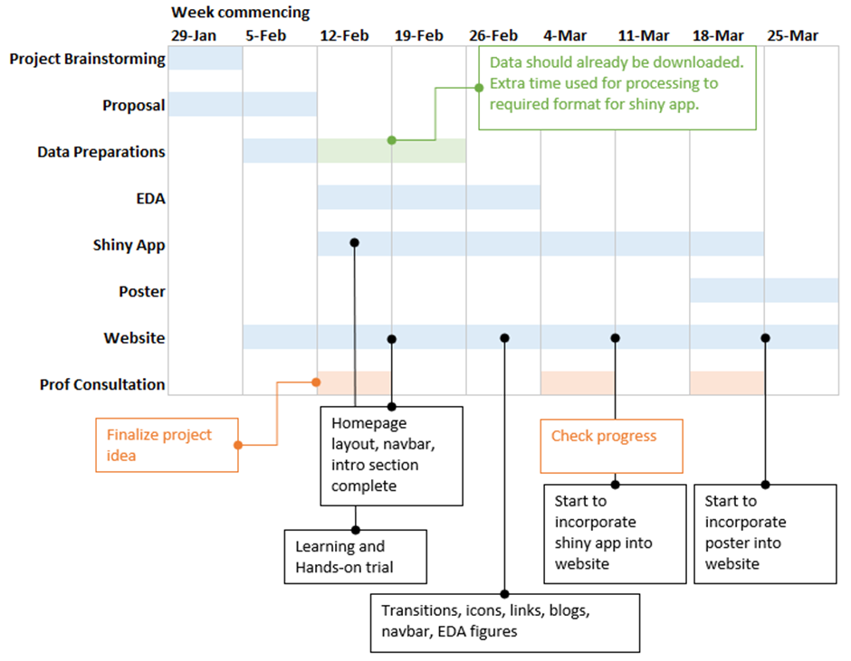

Project Meeting Minutes
This document records the minutes of our project meetings.
Project Member:
- CI Hui
- Colin JIANG Kelin
- SUN Yiping
2024-02-07 Meeting 01
Date: 07 Feb 2024, 7:30pm
Present:
- Colin
- Yiping
- Ci Hui
Absent:
- None
Agenda
- Discuss project idea
- Roles allocation
- Determine timeline
Project Idea
Colin and Yiping suggested going with weather data provided by Prof Kam earlier in class. Below are some of the aspects that can be explored with that dataset.
Singapore Climate
Data: Meteorological Service Singapore daily weather data
EDA:
- Visualize changes in weather conditions in Singapore over past few years.
- Visualize factors contributing to climate change (need more data for other sources)
- Visualize impacts of climate change (need more data for other sources)
Rshiny:
- Forecast temperature/rainfall with time-series analysis
- Predict temperature using attribution modelling or other machine learning techniques like random forest/gradient boosting
HDB Pricing
Data: HDB, Singstats
EDA:
- Visualize historical patterns in HDB prices
- Visualize differences in prices by region and time
Rshiny:
- Predict prices of HDB given some known factors
All 3 agreed to go with weather data for our project. The actual scope will be decided in later meetings. We will start the following 2 in proposal and add/remove after consult with prof.
EDA: Visualize changes in weather conditions in Singapore over past few years by region and time
Rshiny: Forecast temperature/rainfall with time-series analysis
Roles Allocation
Colin will start early with web layout. More time is needed here as we are all beginners at html/css/js. Also will create git repo and host on Netlify.
Ci Hui and Yiping will work on drafting the proposal for submission on 11 Feb. We aim to finish by 9th Feb so that we can enjoy our CNY break.
Proposal will be shared in teams shared folder where multiple users can edit the .doc at the same time instead of editing in .qmd which requires multiple branching, pulling and pushing on Git. Once done, it will be copied over to a .qmd file by colin who will push the final proposal to origin.
Timeline
We discussed about the timeline using an excel sheet. Here is the final screenshot:

Agenda for next meeting
- Finalize project idea (should be after prof consult)
- Models to deploy on Shiny App (by now, we should all have finish Shiny app tutorials)
- Website layout improvements
Adjournment
Meeting ended at 8:10pm. Next meeting on 13th February, 8:00pm (Tentative) online.
2024-02-20 Meeting 02
Date: 20 Feb 2024, 11:00am
Present:
- Colin
- Yiping
- Prof Kam
Absent:
- Ci Hui
Agenda
- Finalize project idea (should be after prof consult)
- Feedback on proposal
- Other advice
Finalize Project Ideas
We decided to go with the visualization of Singapore’s weather on Dengue cases.
Time Series Econometric model
Prof has approved our approach to use time series econometric model to forecast the future temperature. In the real-world application, the researchers would also use satellite image data to forecast the future weather. However, this requires additional data and specific knowledge to interpret the satellite images. Hence, we’ll keep the project scope simple by just using the data downloaded from the website.
Meanwhile, prof has reminded us to check the data source carefully before downloading.
Correlation Study between Weather and Dengue Cases
As dengue clusters are often isolated to regions with outbreaks, Prof had advised that we look at dengue cases on a national and weekly level. Climate data used will hence also be at the national level, aggregated across all regions in Singapore.
In addition, prof suggested that we can use an explanatory model to study the impact of temperature and rainfall on dengue cases. For example, would dengue cases increase when rainfall increases?
Feedback on Proposal
CDA
- Our idea of CDA in the proposal is incorrect. MAPE and RMSE are measures to check accuracy of model, and are not what CDA is about.
Dashboard in ShinyApp
- This is not the focus of the ShinyApp. ShinyApp should focus more on Applications.
Other advice
Prof also shared another potential project idea which is to calibrate a model to interpolate the rainfall at the area without rainfall station. There are a total of 27 rainfall stations in Singapore, but it’s challenging to predict the rainfall at the area outside the rainfall station’s coverage.
However, this requires the knowledge of geospatial interpolation. Hence, we’ll not go into this area for this project
Agenda for next meeting
- Data preparations
- Model finalization
Adjournment
Meeting ended at 11:40am. Next meeting on 24th February, 4:00pm (Tentative) after class.
2024-03-09 Meeting 03
Date: 9 Mar 2024, 3:40pm
Present:
- Colin
- Yiping
- Ci Hui
Absent:
- None
Agenda
- Shiny App modules
Shiny App Modules
Modules has been decided and split among us via whatsapp. This lists the final details of the modules we are working on as part of Take-home_Ex04.
EDA
- Ci Hui will be working on EDA
- EDA will consist of both climate and dengue data
- EDA will allow users to view distribution of data, and compare across years and stations
Explanatory Model
- Yi Ping will be working on the Explanatory model
- Model will be linear regression, with dengue cases as the explained variable, and climate as the explanatory variables
- Users can decide which variables to include in the model
- Results will show model metrics such as accuracy, as well as variable importance
Time series forecast
- Colin will be working on the time series forecast
- Model will be Holt Winters
- Users will be able to choose which climate variable to forecast, and from which whether station. In addition, users will be able to define the time range, train-test split, as well as other tuning parameters
- Results will show forecasted values in a plot, with confidence interval
Agenda for next meeting
- Shiny App progress
- Website progress
- Begin Poster discussions
Adjournment
Meeting ended at 4:30am. Next meeting on 16th March, 3:30pm (Tentative) after class.
2024-03-16 Meeting 04
Date: 16 Mar 2024, 3:50pm
Present:
- Colin
- Yiping
- Ci Hui
Absent:
- None
Agenda
- Shiny App modules
- Project poster
Shiny App Modules
Modules has been decided and split among us via whatsapp. This lists the final details of the modules we are working on for the group Shiny app.
EDA
- Ci Hui has made some plots to discover the trends in the weather data such as cycle plots and geospacial graphs
- More charts will be added to review the relation between weather data and dengue data
Feature Selection
Correlation study
- Ci Hui shared the correlation matrix she made for the weather data
- Correlation between weather and dengue cases will be added
Explanatory Model
- Yi Ping shared that the explanatory model has been calibrated, but the adjusted R^2 is low (~ 3%) which indicates that weather data alone is not enough to explain the dengue cases
- Transformation did help to bring the adjusted R^2 from ~2% to ~3%
- Users will be able to choose which transformation they want to apply, i.e. log transformation, min-max transformation and standardization
- Yi Ping will plot the variable coefficients in a graph so the users can view them visually
Time series forecast
- Colin will be working on a multivariate forecast model, using the forecasted weather data to predict the dengue cases
- The timeseries packages shared by prof in class is very helpful, and Colin will update the codes using those recommended packages and graphs
Ci Hui and Yi Ping will share the data sets and codes with Colin to test the Shiny app.
Project Poster
We will start to work on the poster by referencing to the work from the course seniors. The content written for the sections (i.e. introduction, methodology, tools) can be also displayed in the Shiny app.
Agenda for next meeting
- Shiny App progress
- Poster draft design
Adjournment
Meeting ended at 4:30pm. Next meeting on 23rd March, 3:30pm (Tentative) after class.
2024-03-23 Meeting 05
Date: 23 Mar 2024, 3:40pm
Present:
- Colin
- Yiping
- Prof Kam
Absent:
- Ci Hui